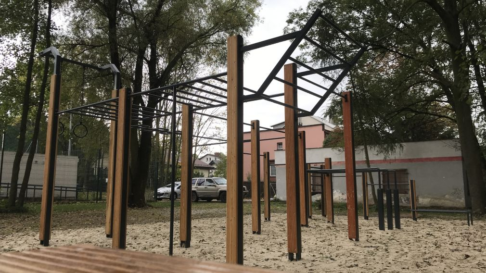
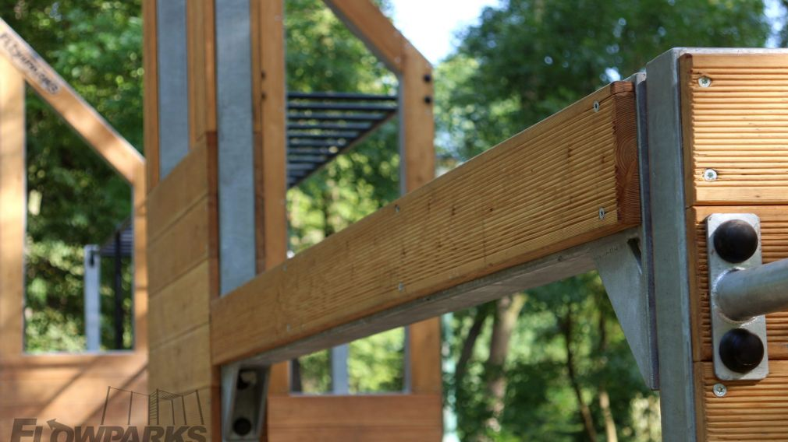
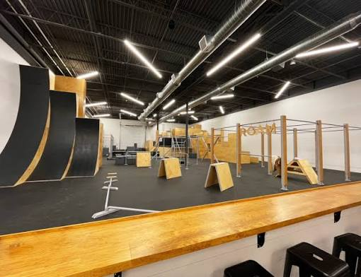
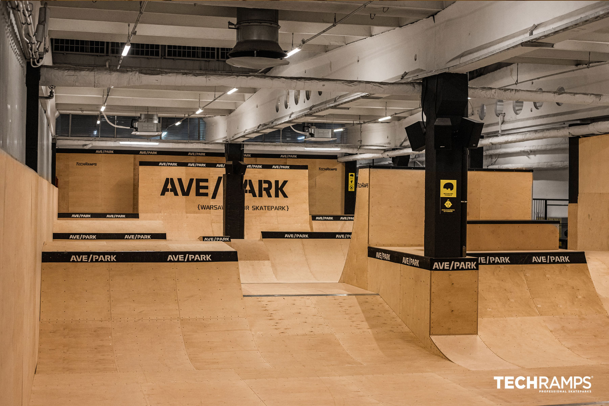
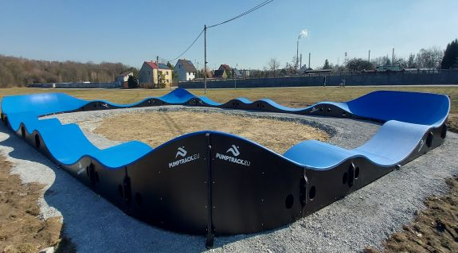
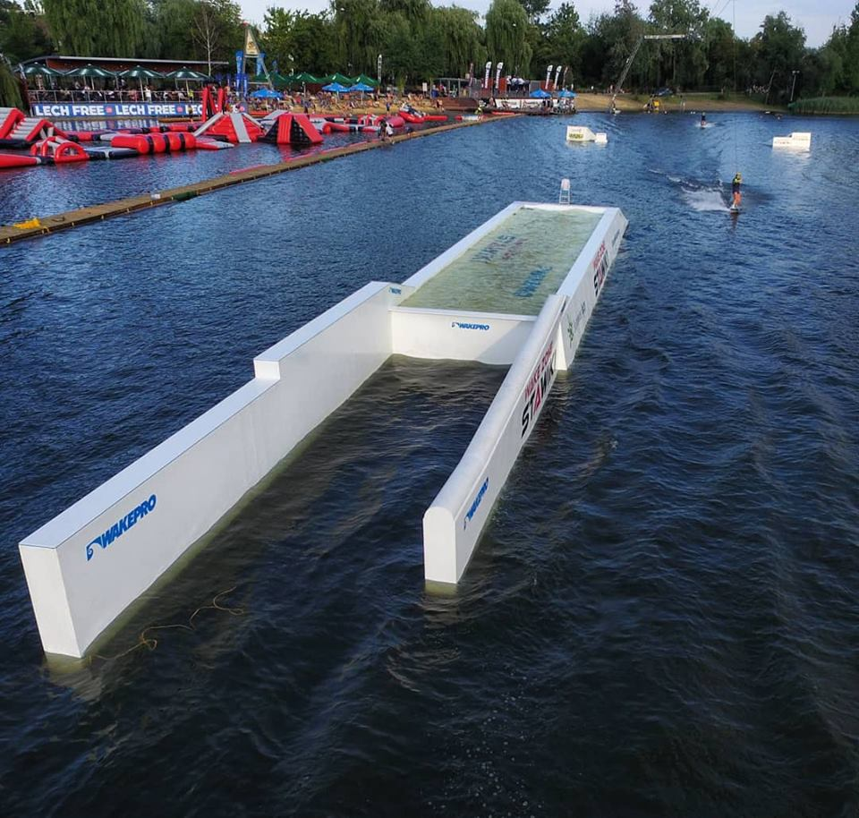
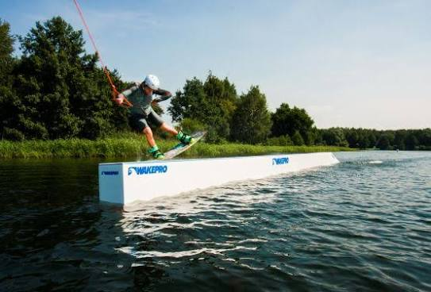

21st-century sports facilities
Role: Senior Mechanical Engineer / Project Manager
FlowParks — development of new product lines
I joined the team responsible for developing products for the sports and recreation industry, designing new solutions and taking them from concept to implementation. In addition to mechanical design, I standardised design processes and worked with sales and production teams.


Responsibilities included:
- Designing the complete Larix product line, including its concept, product architecture and naming.
- Developing a universal design template that enabled existing products to be adapted to a new construction technology.
- Developing products combining steel structures and timber elements, considering durability, aesthetics and manufacturing capability.
- Managing the development of new product lines, including FlowParks Larix and FlowPark Home.
- Coordinating cooperation between design, sales and production departments.
- Standardising technical documentation and design processes to improve the engineering team's work.
- Supporting new-product launches and optimising solutions for series production.
The project produced a complete product family used in installations across multiple international markets and significantly improved the process of designing new solutions.
ROAM Further — end-to-end investment project management (USA)
I was responsible for delivering one of the largest parkour facilities in the United States. I led the project from the first client discussions through completion, coordinating both its technical and organisational aspects.


Responsibilities included:
- Leading the project end to end — from initial client contact to handover of the finished facility.
- Creating the functional design for an existing warehouse and adapting it into a modern sports facility.
- Structural design and coordination of technical documentation.
- Preparing cost estimates and optimising investment costs.
- Negotiating contract terms and maintaining ongoing client communication.
- Managing the project schedule and coordinating a four-person design team.
- Organising production, packing and preparation for international transport.
- Working with contractors and stakeholders throughout delivery.
The project gave me experience leading international investment projects combining design, management and client-facing responsibilities.
Automating estimation and production preparation
To improve sales and production preparation, I designed a tool that automated project estimates and generated preliminary material documentation for pump tracks.


Responsibilities included:
- Developing a calculator that automated commercial quotation preparation.
- Integrating data from 3D models created in SketchUp.
- Automatically generating preliminary bills of materials.
- Including parameters such as surface type, installation method and project location.
- Significantly reducing estimate preparation time and errors caused by manual calculations.
- Improving cooperation between sales, design and production through a single source of data.
The project demonstrated how engineering-process automation could improve organisational efficiency and shorten quotation lead time.
Automating wakeboard-obstacle design
For my degree thesis, completed in cooperation with WakePro, I developed a complete process supporting wakeboard-obstacle design. The objective was to automate analyses and create tools that accelerated new-product development.


Responsibilities included:
- Analysing the stability of floating objects as a function of their geometry.
- Developing a methodology for designing new wakeboard obstacles from scratch.
- Building an automated design process supporting mechanical designers.
- Using engineering tools to analyse structural parameters and functional properties.
- Developing solutions that enabled new product variants to be created faster.
The project combined mechanics, product design and engineering-process automation, establishing the foundations of a modern product-development process within the company.
| Project | PRJ-004 |
|---|---|
| Client | Techramps Group |
| Period | 2019 — 2021 |
| Role | Senior Mechanical Engineer / Project Manager |